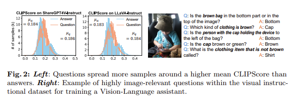
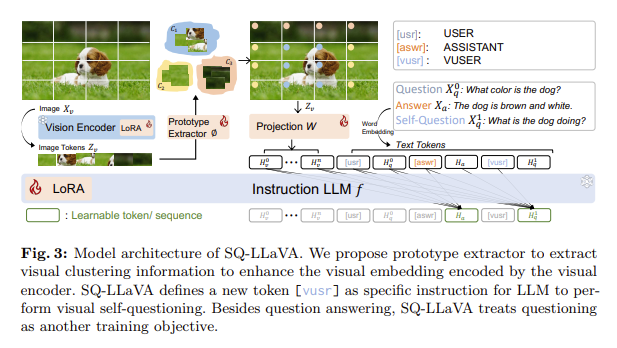
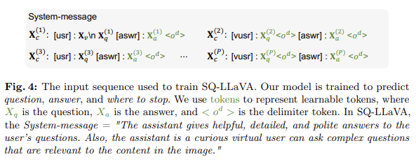
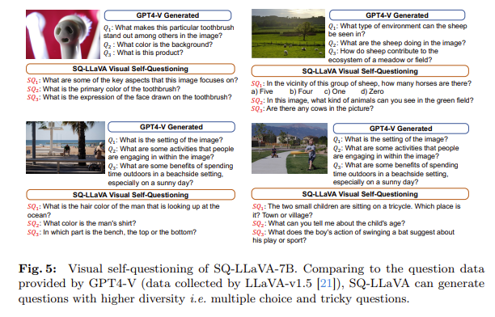
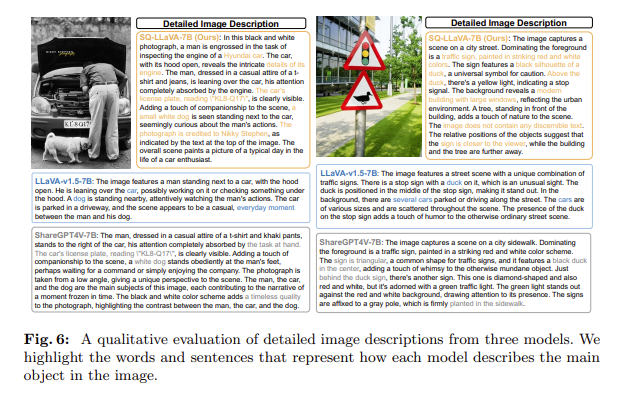

Recent advances in vision-language models have shown notable generalization in broad tasks through visual instruction tuning. However, bridging the gap between the pre-trained vision encoder and the large language models (LLMs) becomes the whole network's bottleneck. To improve cross-modality alignment, existing works usually consider more visual instruction data covering a broader range of vision tasks to fine-tune the model for question-answering, which, however, is costly to obtain and has not thoroughly explored the rich contextual information contained in images.
This paper first attempts to harness the overlooked context within visual instruction data, training the model to self-supervised "learning" how to ask high-quality questions. In this way, we introduce a novel framework named SQ-LLaVA: Self-Questioning for Large Vision-Language Assistant. SQ-LLaVA exhibits proficiency in generating flexible and meaningful image-related questions while analyzing the visual clue and prior language knowledge, signifying an advanced level of generalized visual understanding.
Moreover, fine-tuning SQ-LLaVA on higher-quality instruction data shows a performance improvement compared with traditional visual-instruction tuning methods. This improvement highlights the efficacy of self-questioning techniques in achieving a deeper and more nuanced comprehension of visual content across various contexts.
Existing visual instruction tuning methods focus solely on answer prediction, but questions often contain more image-related information than answers. We validated this by computing CLIPScore (higher = better visual-text relevance) for all image-question and image-answer pairs across two major instruction datasets:
Questions: μq = 0.184
Answers: μa = 0.183
Questions have higher visual relevance.
Questions: μq = 0.186
Answers: μa = 0.184
Questions have higher visual relevance.

Figure 2: Questions spread more samples around a higher mean CLIPScore than answers, confirming that questions in visual instruction data carry rich, under-exploited visual context.
A novel training technique that leverages highly relevant question contexts in instruction data. The SQ learning task promotes LLMs to understand image-question relationships, enhancing vision-language alignment without needing new data.
A tuning architecture consisting of ViT-LoRA, LLM-LoRA, and a prototype extractor that enhances vision embeddings through learned clusters with meaningful semantic information, all with significantly fewer trainable parameters.
SQ-LLaVA outperforms existing visual instruction tuning methods on visual question-answering, visual instruction benchmarks, and zero-shot image captioning across 9 out of 10 evaluation tasks.

Figure 3: SQ-LLaVA architecture. A prototype extractor enhances visual embeddings from
the vision encoder. A new token [vusr] instructs the LLM to perform visual
self-questioning, treating questioning as an additional training objective beyond answering.
SQ-LLaVA consists of four main components:
1) Vision Encoder: A pre-trained CLIP-ViT that extracts a sequence embedding
of image tokens Zv for an input image.
2) Prototype Extractor: A lightweight module φ(·) that learns visual clusters via
iterative Expectation-Maximization with K=256 cluster centers and T=2 iterations, enhancing the original
image tokens with semantic grouping information.
3) Projection Block: A two-layer linear projector W(·) that maps enhanced image
tokens to the language domain.
4) Instruction LLM: Pre-trained Vicuna, which predicts the next token given the
previous embedding sequence.
Unlike existing visual instruction tuning that focuses solely on answer prediction,
SQ-LLaVA treats questioning as a new learning objective. We introduce a
special token [vusr] (Virtual User) that instructs the LLM to generate
image-related questions. This is, to the best of our knowledge, the first practice
in the field of visual instruction tuning.
Each conversation turn is constructed as either a standard QA pair (with [usr]
and [aswr] tokens) or a self-questioning pair (with [vusr] and
[aswr] tokens). A random threshold δ=0.5 controls the proportion of
self-questioning pairs in each conversation. The model learns to ask questions in a
zero-shot manner — without any in-context examples or human language instructions,
using only the [vusr] token as a prompt.

Figure 4: Input sequence format. The model is trained to predict questions, answers,
and where to stop. [vusr] signals the self-questioning instruction.
The prototype extractor recognizes and groups similar patterns of visual information from the latent space. It uses iterative EM clustering (T=2 iterations) with K=256 randomly initialized cluster centers. Three trainable linear layers (query, key, value) project the prototypes and image tokens for soft cluster assignment.
After extraction, each image token is updated by a weighted sum over all prototypes based on normalized cosine similarity, aggregating entities with shared semantic attributes (e.g., "grass", "dog"). This enhances contextual understanding without requiring pixel-wise supervision.
The vision encoder and LLM are frozen. Only the prototype extractor φ and the projection block W are trained on image-description pairs. The goal is to maximize the probability of predicting image descriptions given the image tokens. Pre-training uses AdamW optimizer with learning rate 2×10-3 and a global batch size of 256 for one epoch.
Both the vision encoder and LLM are unfrozen for joint optimization using LoRA adapters for efficiency. The learnable parameters include LLM-LoRA (rank=128, α=256), ViT-LoRA (rank=32, α=64), the prototype extractor, and the projection block.
The model is trained with two objectives simultaneously: Self-questioning (predicting the next question given the image and conversation history) and Answering (predicting the answer given the image, history, and question). Fine-tuning uses a global batch size of 128, learning rate 2×10-4 for LoRA and 2×10-5 for other layers, for one epoch.
We evaluate on ten benchmarks covering VQA tasks, instruction tuning tasks, and multilingual understanding. SQ-LLaVA trained on LLaVA data surpasses LLaVA-v1.5 on 9 out of 10 benchmarks at 7B scale, and SQ-LLaVA* trained on ShareGPT4V data outperforms ShareGPT4V on 6 out of 10 benchmarks — all with significantly fewer trainable parameters.
| LLM | Model | VQAv2 | GQA | VizWiz | SQAI | VQAT | POPE | MM-Vet | LLaVAW | MMB | MMBCN |
|---|---|---|---|---|---|---|---|---|---|---|---|
| 7B | InstructBLIP | - | 49.2 | 34.5 | 60.5 | 50.1 | - | 26.2 | 60.9 | 36.0 | 23.7 |
| Qwen-VL | 78.8 | 59.3 | 35.2 | 67.1 | 63.8 | - | - | - | 38.2 | 7.4 | |
| Qwen-VL-chat | 78.2 | 57.5 | 38.9 | 68.2 | 61.5 | - | - | - | 60.6 | 56.7 | |
| LLaVA-v1.5 | 78.5 | 62.0 | 50.0 | 66.8 | 58.2 | 85.9 | 30.5 | 63.4 | 64.3 | 58.3 | |
| ShareGPT4V | 80.6 | 63.3 | 57.2 | 68.4 | 60.4 | 86.8 | 37.6 | 72.6 | 68.8 | 62.2 | |
| SQ-LLaVA | 79.2 | 62.8 | 54.0 | 68.9 | 58.6 | 87.7 | 32.5 | 66.3 | 66.2 | 58.1 | |
| SQ-LLaVA* | 80.3 | 63.7 | 55.3 | 70.5 | 60.5 | 87.2 | 37.6 | 74.3 | 66.6 | 60.0 | |
| 13B | InstructBLIP | - | 49.5 | 33.4 | 63.1 | 50.7 | 78.9 | 25.6 | 58.2 | - | - |
| LLaVA-v1.5 | 80.0 | 63.3 | 53.6 | 71.6 | 58.2 | 85.9 | 35.4 | 70.7 | 67.7 | 63.6 | |
| ShareGPT4V | 81.0 | 64.8 | 55.6 | 71.2 | 62.2 | - | 43.1 | 79.9 | 68.5 | 63.7 | |
| SQ-LLaVA | 80.1 | 63.6 | 54.6 | 69.8 | 60.2 | 87.7 | 35.5 | 74.6 | 68.7 | 62.0 | |
| SQ-LLaVA* | 81.3 | 65.0 | 58.2 | 71.5 | 61.9 | 87.4 | 39.7 | 80.7 | 68.5 | 62.5 | |
Table 1: Comparison with state-of-the-art on ten benchmarks. SQ-LLaVA trained on LLaVA data; SQ-LLaVA* trained on ShareGPT4V data. Bold = best; underlined = second best.
SQ-LLaVA achieves 73% and 66% averaged improvement over ClipCap and DiscriTune on all datasets. Compared to LLaVA-v1.5, SQ-LLaVA achieves 2% averaged improvement, and SQ-LLaVA* surpasses ShareGPT4V on Nocapsout and Conceptual datasets, demonstrating adaptability to unseen domains.
| Model | Flickr30k | Nocapsout | Conceptual | |||
|---|---|---|---|---|---|---|
| B@4 | CIDEr | B@4 | CIDEr | B@4 | CIDEr | |
| ClipCap | 17.21 | 41.65 | 20.32 | 51.74 | 1.47 | 23.74 |
| DiscriTune | 18.48 | 44.78 | 24.10 | 57.06 | 1.71 | 28.01 |
| LLaVA-v1.5 | 28.67 | 81.27 | 35.78 | 103.56 | 2.79 | 39.20 |
| ShareGPT4V | 31.00 | 86.17 | 37.19 | 107.45 | 2.78 | 37.86 |
| SQ-LLaVA | 29.88 | 83.51 | 36.21 | 105.42 | 2.90 | 39.49 |
| SQ-LLaVA* | 31.49 | 83.14 | 37.20 | 107.42 | 2.91 | 41.24 |
Table 2a: Zero-shot image captioning.
| Model | Zero-shot | Fine-tune | ||
|---|---|---|---|---|
| B@4 | CIDEr | B@4 | CIDEr | |
| ClipCap | 8.50 | 37.03 | 32.60 | 108.55 |
| DiscriTune | 13.99 | 53.20 | 32.31 | 105.40 |
| eP-ALM | 29.47 | 97.22 | 33.35 | 111.63 |
| MAPL | 12.30 | 54.30 | 36.45 | 125.20 |
| LLaVA-v1.5 | 29.96 | 111.46 | - | - |
| SQ-LLaVA | 29.85 | 110.77 | 40.76 | 136.78 |
Table 2b: COCO captioning.
We ablate three components — ViT-LoRA (V-LoRA), self-questioning (SQ), and prototype extractor (Proto) — on two instruction datasets of different scales. Self-questioning brings a consistent performance boost across all benchmarks. With all three components, we achieve +2.4% average improvement on the smaller dataset and +3.0% on the larger dataset.
| PT | IT | V-LoRA | SQ | Proto | VizWiz | SQAI | VQAT | POPE | LLaVAW | Avg. |
|---|---|---|---|---|---|---|---|---|---|---|
| 558K | 665K | ✗ | ✗ | ✗ | 49.4 | 68.4 | 58.2 | 86.5 | 67.1 | 65.9 |
| ✓ | ✗ | ✓ | 52.4 | 67.9 | 58.6 | 87.7 | 65.6 | 66.4 | ||
| ✓ | ✓ | ✗ | 52.6 | 68.4 | 57.8 | 88.2 | 67.3 | 66.9 | ||
| ✗ | ✓ | ✓ | 53.4 | 69.3 | 58.1 | 87.9 | 67.9 | 67.3 | ||
| ✓ | ✓ | ✓ | 54.0 | 68.9 | 58.6 | 87.7 | 68.1 | 67.5 | ||
| 1200K | 700K | ✗ | ✗ | ✗ | 51.5 | 68.9 | 58.9 | 86.8 | 72.1 | 67.6 |
| ✓ | ✗ | ✓ | 54.0 | 68.9 | 60.2 | 87.2 | 71.6 | 68.4 | ||
| ✓ | ✓ | ✗ | 55.4 | 69.2 | 59.5 | 86.8 | 77.3 | 69.6 | ||
| ✗ | ✓ | ✓ | 54.2 | 70.3 | 60.5 | 87.5 | 72.7 | 69.0 | ||
| ✓ | ✓ | ✓ | 55.3 | 70.5 | 60.5 | 87.2 | 74.3 | 69.6 | ||
Table 3: Ablation study on two instruction datasets. SQ = self-questioning, Proto = prototype extractor.
SQ-LLaVA generates diverse, meaningful questions including multiple-choice, reasoning,
and tricky questions — all highly correlated with the visual content. Compared to
GPT-4V generated questions, SQ-LLaVA's questions show higher diversity
while requiring no explicit language instruction, only the [vusr] token.

Figure 5: SQ-LLaVA generates questions with higher diversity than GPT-4V, including multiple-choice and tricky questions that are highly image-relevant.

Figure 6: SQ-LLaVA generates descriptions with concrete visual concepts (e.g., "Hyundai", "small white dog", "Nikky Stephen") while LLaVA-v1.5 uses only general concepts, and ShareGPT4V suffers from object hallucination.
@inproceedings{sun2024sqllava,
title = {SQ-LLaVA: Self-Questioning for Large Vision-Language Assistant},
author = {Sun, Guohao and Qin, Can and Wang, Jiamian
and Chen, Zeyuan and Xu, Ran and Tao, Zhiqiang},
booktitle = {European Conference on Computer Vision (ECCV)},
year = {2024},
}